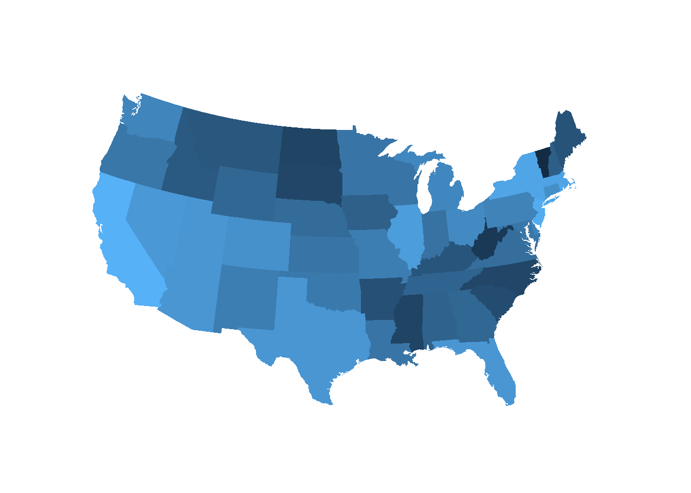
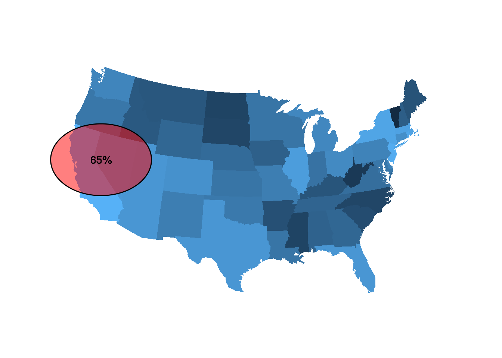

Prep
library(ggplot2)
crimes <- data.frame(state = tolower(rownames(USArrests)), USArrests)
crimesm <- reshape2::melt(crimes, id = 1)
states_map <- map_data("state") Make your map
map <- ggplot(crimes, aes(map_id = state)) +
geom_map(aes(fill = UrbanPop), map = states_map) +
expand_limits(x = states_map$long, y = states_map$lat) +
coord_map(projection = "polyconic") +
theme_void() +
theme(legend.position = "none")
map
Make the map a grid graphical object (“grob”)
grobMap <- ggplotGrob(map)Make a container canvas
df <- data.frame(x = 1:10, y = 1:10)
container_plot <- ggplot(df, aes(x, y)) +
geom_blank() +
theme_void()
container_plot
(This space purposely blank for container plot.)
Add a custom annotation
To do that, you pass it a grob
container_plot +
annotation_custom(grob = grobMap) Then add your circle annotation / custom ribbon annotation
alternatively ggforce::geom_circle?
gg_circle <- function(r, xc, yc, color="black", fill=NA, ...) {
x <- xc + r*cos(seq(0, pi, length.out=100))
ymax <- yc + r*sin(seq(0, pi, length.out=100))
ymin <- yc + r*sin(seq(0, -pi, length.out=100))
annotate("ribbon", x=x, ymin=ymin, ymax=ymax, color=color, fill=fill, ...)
}Also remove text and ticks and lines in theme
container_plot +
annotation_custom(grob = grobMap) +
gg_circle(r=1, xc=2.5, yc=6, fill="red", alpha=.5) +
geom_text(aes(label="65%"), x=2.5, y=6) +
theme_void()